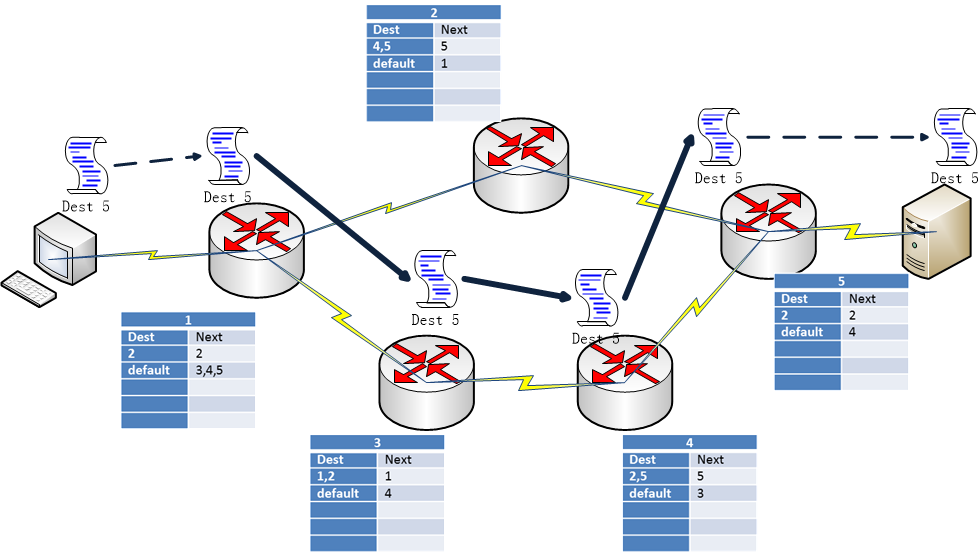

Guide
Introduction
This experiment has two missions:
- To teach students basic network concepts: network topology(网络拓扑) / network edge(网络边界) / route table(路由表) / network delay(网络延迟) / transmission rate(传输速率) / throughput(吞吐量) / client-server model(客户端-服务器模型).
- to make students realize the importance of network protocol in complex and huge environment by teamwork.
In order to make the experiment clear and easy, the experiment background is based on the video conference(视频会议), which need all of the involvers see others, like the multiple persons video communications on QQ. The experiment has a few elements:
- Client-Server Model(C-S) is the usual model in network service. Client send a request to server, then the server accept the request and response to the respective client. In our experiment about the video conference, the client send his video information to the server, and receive all others' video information from the server. For simplicity, we just consider that a client sends data to the server when simulate the whole network.
- Network topology is the arrangement of the various elements (links, clients, routers, servers, etc.) of a computer network. In our experiment, the network topology is a given physical structure.
- Client which communicate with the server. It sends itself’s video information to server and get the other clients' video information from server. The clients can be PC / Phone / Pad etc.
- Server which provides the video conference service to clients on the internet, like the QQ server.
- Datagram(数据报文) which contains the information of video and the destination of the server. Datagrams is pieces of video streaming information.
- Router(路由器) which is the crossing in network and indicate the direction where the router forward the datagram to the next network device(may be another router or a server).
- Communication Link(通信链路) which transports the video datagram like the roads transporting the vehicles. In our experiment, the length of link between adjacent devices is 1.
Thus, in many ways, datagrams are analogous to trucks, communication links are analogous to highways and roads, routers are analogous to intersections, and clients and servers are analogous to buildings. Just as a truck takes a path through the transportation network, a datagram takes a path through a computer network
Requirements
Because the students have learn the basic knowledge in class, the basic concept will be skipped or talked in brief.
For simplicity, the experiment just account for the Network Layer. The link and physical layer is neglected in this experiment.
- Datagram
Because of the video data is very big and streaming like a river, so we cut data into pieces and we transport the piece to destination in order. The datagram on the network layer mainly contains a data piece, source address and destination address. Other elements are neglected for simplicity. In this experiment, the node‘s index(from 0 to n-1) represents the address of the router devices. For example, the figure below reveals that datagram containing video data is transported from 0 to 5.
P.S. : Typically a client and a server is attached directly to one router, the default router for the client or the server (also called the first-hop router(第一跳路由器) for the client or the server). Whenever a client or the server sends a packet, the packet is transferred to its default router. We refer to the default router of the source client as the source router and the default router of the destination server as the destination router. The figure below shows the router 1 is the first-hop router for the client, and the route 5 is the first-hop router for the server.
- Router & Routing table
Let’s turn our attention to its forwarding function—the actual transfer of datagrams from a router’s incoming links to the appropriate outgoing links at that router. The router mainly has three components:
- Input ports: accept the datagram
- Routing processor: maintains routing tables and attached link state information, and computes the forwarding table for the router.
- Output ports: send the datagram. The output and input ports can share the same physical link. In the experiment we can neglect the difference between output and input ports.
So every router knows its adjacent routers, clients and servers. Let's talk about the routing table below.
Each router has a routing table (forwarding table) that maps destination addresses to that router’s outbound links. When a datagram arrives at a router, the router examines the address and searches its forwarding table, using this destination address, to find the appropriate outbound link. The router then directs the datagram to this outbound link.
A routing table is a table that contains many rows. For simplicity, the routing table has just two columns. The first column is the destination addresses. The second column indicates the identity of the next router. A routing table contains many records, but in our experiment, the number of the routing table is 5. If the destination of a datagram is in the destination addresses of a record, the router will forward the datagram to the next router indicated by the respective second column.
Notice: Router forwards the datagram scanning from the first record to last record in the routing table, if the datagram's destination is in a record destination which is being scanned, the router will stop scanning the rest records and forward the datagram soon. If there is no record in routing table satisfies the datagram, the datagram will be thrown and the transmission failed.
In our experiment, the destination of a record of routing table is represented with this format: "1,2,4", numbers split by "," (英文半角逗号) or "default". "default" means if the former record's destination don't satisfy the destination of datagram, "default" will satisfy it. So "default" is always filled in the last and it will reduce the routing table's designing work when there are many destinations to be filled in the end of the table. For example, the first row in the below routing table of router 1 reveals that if the destination of datagram is 2, then go to the route 2, if the destination of datagram isn't 2, then go to the route 3.
For example, the figure below show how the datagram is transported from the client(the address of its first-hop router is 1) to server(the address of its first-hop router is 5) based on the routing tables among the network.
In most environments, routing table is dynamic and adjusted all the time by the network situations. In our experiment, for simplicity, the routing table is static designed by students before forwarding the datagrams and it can't be modified during the simulation for forwarding the datagrams.
- Protocol(optional Reading)
In our human protocol, there are specific messages we send, and specific actions we take in response to the received reply messages or other events (such as no reply within some given amount of time). Clearly, transmitted and received messages, and actions taken when these messages are sent or received or other events occur, play a central role in a human protocol. If people run different protocols (for example, if one person has manners but the other does not, or if one understands the concept of time and the other does not) the protocols do not interoperate and no useful work can be accomplished. The same is true in networking—it takes two (or more) communicating entities running the same protocol in order to accomplish a task.
A protocol defines the format and the order of messages exchanged between two or more communicating entities, as well as the actions taken on the transmission and/or receipt of a message or other event.
In our experiment, the protocol is the routing protocol. It indicates us how to design a good routing table with every team member's independent work. There are many routing protocols which are too complex for us. So we neglect the existence of protocol. Instead, we team members design the routing table together and needn't care the protocol meaning. It's enough for us to get the first target and take close to second target(We will talk about it below).
- Performance Criterion about Routing Table Designing
There are many properties about the performance of routing protocol. In out experiments, we just take account these two properties:
- Delay
Delay of a datagram is the time interval between being sent by the source and being received by the destination. So delay is affected by many factors, such as link length, processing capability of a router etc. But in our experiment about reducing delay, we only consider the time transporting over the physical links. The longer the path is, the more time the transport needs. So reducing the path length is a way to reduce the delay.
- Througtput
Every router has a limited capability to forward the datagram, which is named transmission rate. We measure transmission rate by size of datagrams forwarded per second. For example, 100Mbps represents a router can forward 100M byte datagram per second. The better capability router costs more. In reality, we use 100Mbps routers for our computers in home, and 500Mbps or 1Gbps routers in high-level network for servers.
Because the transporting path has different routers whose transmission rate are different too, so a question is how to calculate the final transmission rate of the datagram. Like the traffic in road, the rate of the trunk is most limited by the most crowded traffic. We assume the router list of the path for a client to server is $ \{r_1, r_2, ..., r_m\} $, and the transmission rate of them are $ \{R_1, R_2, ..., R_m\} $ So in the network, the final transmission rate of the client is decided by the least transmission rate of the routers over the path, that is $ min\{R_1, R_2, ..., R_m\} $ , it is the transmission rate of the bottleneck link.
In situation where many datagram from $ N_i $ different clients come to the same router($ r_{i} $), every client on this router just gets average transmission rate($ R_{i}/N_{i} $). Assuming the number of clients whose datagrams come to the router($ r_{i} $) is $ N_{i} $, the router list of the path for a client to server is $ \{r_1, r_2, ..., r_m\} $. Then we can conclude that the final transmission rate of the client is $ min\{R_{1}/N_{1}, R_{2}/N_{2}, ..., R_{m}/N_{m}\} $
The throughput is the size of transmission of data in a period of time. In our experiments, the throughput is calculated by accumulation of the final transmission rate of all clients. We increase the final transmission rate of a client by reduce the number of clients that come to the same router. From the view of the network, we can adjust the routing table for better throughput.
- Delay
Experiment Targets
In the experiment, the team members design the routing table together and experience the delay and throughput bought by different routing table design.
Every team can choose a network topology which is connected graph and includes 30 routers. The graph is constructed by three regular decagon(正十边形) of different size. The transsimisson rate of routers on the inner decagon is 500Mbps, that of routers on the middle decagon is 300Mbps and that of routes on the outer decagon is 150Mbps. There are two targets in our experiment:
- All routers can communicate each other. It means datagram from a router to an arbitrary router can be transported normally.
- Get less delay and better throughput of the network. After got to the taget 1, the team must simulate the network by video conference of 8 clients. The game system will randomize 8 routers at the outer decagon as the default routers of the clients and 1 router at the inner decagon as the default router of the server. Experiment system will use clients each to send theirself's video information datagram to the server. For simplicity, we don't account for the datagrams from the server to clients. The simulation will reveal the average rate of routers, traffic on a link and final transmission of clients from clients to the only server. In order to get less delay and better throughput of the network, the team should redesign the routing table and simulate many times.
Experiment Operation
The experiment has two modes. One is Test-Mode, another is Formal-Mode. Test-Mode is for trying and learning for students. We support every team start the experiment from the Test-Mode. Every team can clear the experiment record and restart the Test-Mode anytime. But the Formal-Mode can't be restart once your team has decided a network topology.
The experiment has four steps:
- Choose a network topology for your team. Click into the choosing page, then click for deciding, or click for changing another random network topology. Anyone in the team can choose network topology until someone in your team click for deciding.
- Design the routing table on your own routers. After the Step1, every member will get 6 routers randomly and will get into the design page. You can click the yellow router for filling your routing table. Every table has only 5 rows. You can fill numbers split by "," (英文半角逗号) into the first column, such as "1,3,4" or you can fill "default" into it. The 5 rows needn't be all fiiled, and the blank rows will be neglected when router forward the datagram. For the second column, you can select the next router address. You can click to save your work. You can click to test whether the whole network routing table satisfies the Target 1 and do simulating if the Target 1 is satisfied. If Target 1 is not satisfied, the system will warn you from which source to which destination can't be communicated. So the team member can modify the routing table to get the Target 1.
- Simulate the network and calculate the delay factor and throughput. After take the Target 1 in step 2, the team member can simulate the network. The game system will randomize 8 routers at the outer decagon as the default routers of the clients and 1 router at the inner decagon as the default router of the server. The simulation of 8 clients video conference will reveal the average rate of routers, traffic on a link and final transmission of clients.
- Click to return the step 2 to modify the routing table.
- Click to simulate again.
- Click to download the image for later presentation.
- Click to submit the experiment result.
- Submit the experiment result including your routing tables and 20-times random simulate result. If the routing table design get the Target 1, the submit will succeed. The system will do 20-time random simulation for the evaluation of your network. That is to say, the position of clients and servers will be random for 20-times.
Score
The target 1 is 65 grades. Once you can get through the simulation, you can get the 65 grades.
The target 2 is 35 grades, average transmission rate of clients for 20 grades and average path length from clients to server for 15 grades.